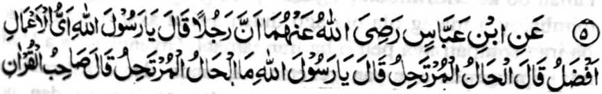
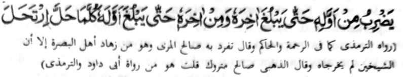

Miyakathitayan ko Ibn-e Abbas (Radhiallaho ‘Anho) a pitharo iyan, “Mata-an a aden a mama a pitharo iyan, ‘Ya Rasulollah (Sallallaho ‘Alaihi wa Sallam)! Antona-a ko manga ‘Amaal-i makalelebi?’ Pitharo iyan, ‘Al-Haal wal Murtaheel!’ Pitharo iyan, ‘Ya Rasulollah (Sallallaho ‘Alaihi wa Sallam)! Antona-ai Al-Haal wal Murtaheel?’ Pitharo iyan, ‘So bolayoka o Qur’an a sekaniyan so pho-onan niyan matiya so po-onan niyan [a Qur’an] taman sa mira-ot ko kaposan niyan, go pho-on ko kaposan niyan taman sa mira-ot ko po-onan niyan. Sa igira domikha na pezompatan niyan peman.’”
So basa a Arab a Al-Haal na aya ma-ana niyan na so mapepento a pendekha-an ko kabatiya sa Qur’an, go so katharo a Al-Murtaheel na aya ma-ana niyan na melalakao. Aya ma-ana niyan na anda den-i katamata ko Qur’an, na pho-on den pharoman so tao. Kena ba amay ka makatamat ta sa Qur’an na amay den pharomani. So basa a Al-Haal wal Murtaheel na miya-osay ko isa a riwayat ko [kitab a] Kanzul-Ommal a aya ma-ana niyan na Al-Khatimul Mofattih (So tomiyamat ago mipho-on), ma-ana so miyakatamat sa Qur’an na piyamakotan niyan a mipho-on peman sa ika dowa.
Masiken a giya-i ketodan a dadabi-atan o kadakelan sangka-iya inged tano, aya kalalayaman na anda den-i kabatiya-a o tao ko mori a Surah sa Qur’an na mepho-on peman ko paganay a Surah taman bo ko Moflihoon. So gi-i si-i kanggola-ola-a na mimbaloy a matag ola-ola ago diden awida akal o manga tao o ba iran sompati aya pen o ba iran tamata. Giyangka-iya a Hadith na inipangenda-o niyan reketano a, anda den-i katamata ko Qur’an, na kasowin peman sa po-onan na itataros den noto taman sa matamat peman.
Minisorat ko Sharah-ul-Ihya ago si-i ko Al-Itqan [a inisorat] o Allamah Suyuti (Rahmatullahi ‘Alaihi) a miyakathitayan ko Darmi a igira miyabatiya o Rasulollah (Sallallaho ‘Alaihi wa Sallam) so Surah An-Nas (mori-pori a Surah) na phonan niyan peman so Surah Al-Baqarah taman ko [katharo a] Moflihoon na oriyan noto na gi-i sekaniyan gi-i ndowa-a pantag ko katamata niyan peman ko Qur’an.